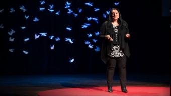
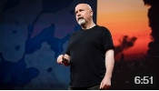
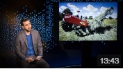
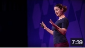
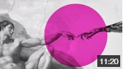
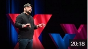
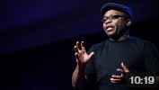
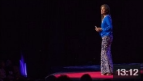

Ideas worth spreading
LOGIN
WATCH
DISCOVER
ATTEND
PARTICIPATE
ABOUT
How a team of chefs fed Puerto Rico after Hurricane Maria
Jose Andres / Chef

How to tame your wandering mind
TED Talk: Some simple techniques to boost your attection!
7 simple ways to spark your creativity
Playlist: Easy, straightforward techniques to jumpstrart inniovative thinking and surface new, brilliant ideas
Tara Houska
The Standing Rockesistance and our fight for indigenous rights
Posted Apr 2018
Kasiva Mutua
How I use the drum to tell my story
Posted Apr 2018
Rated Inspiring, Beautiful

Danny Hillis
Should we create a solar shade to cool the earth?
Posted Apr 2018
Rated Informative, Ingenious
Andrew Dent
To eliminate waste, we need to rediscover thrift
Posted Apr 2018

Drew Philp
My $500 house in Detroit — and the neighbors who helped me rebuild it
Posted Apr 2018
Rated Persuasive, Fascinating

Irina Kareva
Math can help uncover cancer's secrets
Posted Apr 2018
Rated Informative, Fascinating

Raphael Arar
How we can teach computers to make sense of our emotions
Posted Apr 2018
Rated Informative, Fascinating

Christian Picciolini
My descent into America's neo-Nazi movement — and how I got out
Posted Apr 2018
Rated Inspiring, Courageous
Judith Heumann
Our fight for disability rights — and why we're not done yet
Posted Apr 2018
Rated Inspiring, Informative

Leo Igwe
Why I choose humanism over faith
Posted Apr 2018
Rated Inspiring, Persuasive
Ndidi Nwuneli
The role of faith and belief in modern Africa
Posted Apr 2018
Rated Inspiring, Informative

Ndidi Nwuneli
The role of faith and belief in modern Africa
Posted Apr 2018
Rated Inspiring, Informative